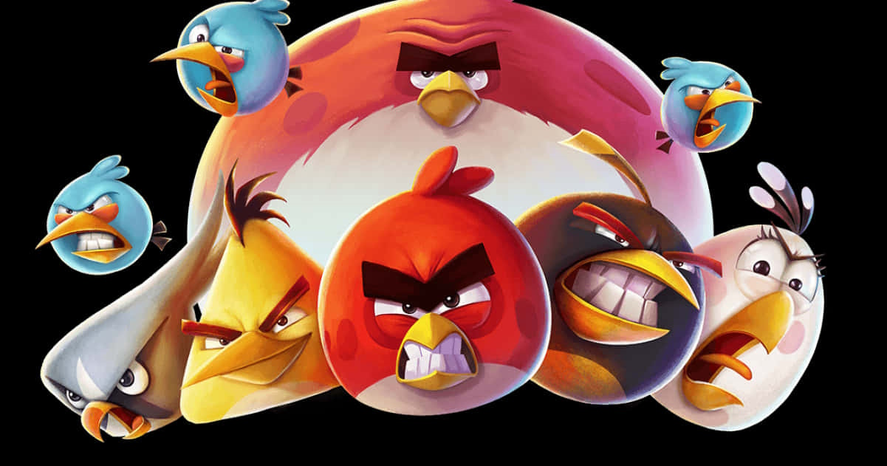

Angry Birds nació en 2009 cuando la compañía finlandesa Rovio Entertainment decidió crear un juego simple pero adictivo para dispositivos móviles. El concepto era sencillo: usar una honda para lanzar pájaros contra estructuras que protegían a unos cerdos verdes que habían robado sus huevos.
El éxito fue inmediato y masivo. En solo unos años, Angry Birds se convirtió en un fenómeno global, expandiéndose a múltiples plataformas, generando secuelas, spin-offs, merchandising, series animadas y películas.
Lo que comenzó como un juego móvil se transformó en una de las franquicias de entretenimiento más exitosas del siglo XXI, con más de 4.500 millones de descargas en total.
